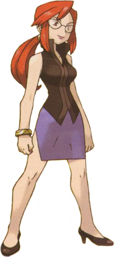
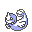
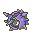
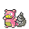
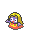
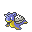

1. Lorelei

Lorelei é a primeira líder da arrasadora Elite dos Quatro da Liga Pokémon da região de Kanto nos jogos de Pokémon Red e Blue. Ela se especializa em Pokémon do tipo Gelo e é conhecida pelo seu estilo de batalha lógico e estratégico, uma treinadora com um raciocínio de impressionar qualquer um na hora da batalha. Seu intelectual time de pokémon é formado por:
| Ícone | Nome | Tipo(s) | Nível | Principal Fraqueza |
|---|---|---|---|---|
|  | Dewgong | Água/Gelo | 52 | Elétrico e Lutador |
|  | Cloyster | Água/Gelo | 51 | Elétrico e Lutador |
|  | Slowbro | Água/Psíquico | 52 | Elétrico, Inseto, Fantasma e Grama |
|  | Jynx | Gelo/Psíquico | 54 | Fogo, Inseto e Fantasma |
|  | Lapras | Água/Gelo | 54 | Elétrico e Lutador |